护肤相关筛查
使用固定的五种护肤成分参照，比较同一模型、同一终点；保留跨平台分歧。
我们探索液液相分离能否改善微生物生产光甘草定，并用可追溯证据检验护肤用途、资源消耗和环境影响。
核心实验比较是：低表达 OC/DMT、无相分离的基线组 G1，与相同背景的相分离组。我们希望检验生产效率是否改善，以及改善是否足以抵消额外的表达、培养和纯化负担。
使用固定的五种护肤成分参照，比较同一模型、同一终点；保留跨平台分歧。
按 1,397 篇文献分析研究对象、宿主、工程策略与相分离应用，新增八张内容图。
计算纯产物增益与资源增量之间的关系，帮助确定实验目标。
尚无本项目匹配组产率、纯度、资源清单和配方安全结果。
本轮继续完成的是数据分析和实验设计。模型记录来自已实际执行并保存的运行；本次重建页面读取这些结果，没有把读取缓存写成重新运行模型，也没有把实验计划写成湿实验完成。
这次直接使用已经筛选的完整数据库，围绕“研究什么、用什么底盘、采用什么策略、哪些方法能够迁移”展开分析。八张图把项目放回已有研究网络，再将证据连接到我们的实验问题。
统计单位为不同 DOI，20,567 条提取记录归并为 1,397 篇文献条目，避免把同篇论文的多行结果计成多篇。主类别图每篇只计一次；主题图允许一篇进入多个集合。以下比例描述本项目文献库。
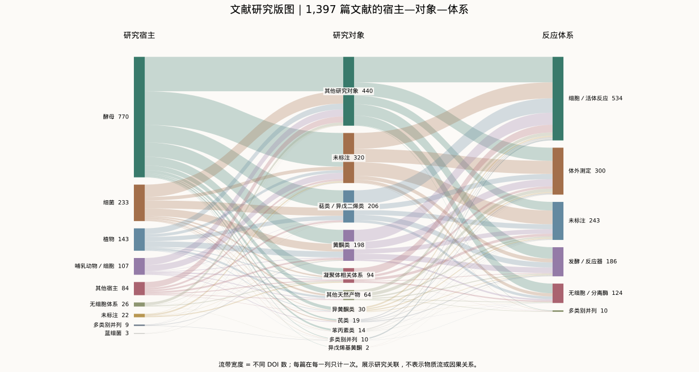
读图结论：以源表主宿主标签统计，酵母为 770 篇（55.1%）。黄酮、异黄酮及异戊烯基黄酮主类别共 230 篇，其中 113 篇的主宿主是酵母。它们为本项目选择酵母和黄酮类通路提供可借鉴的底盘与方法文献，而不是直接给出光甘草定的最佳宿主排名。
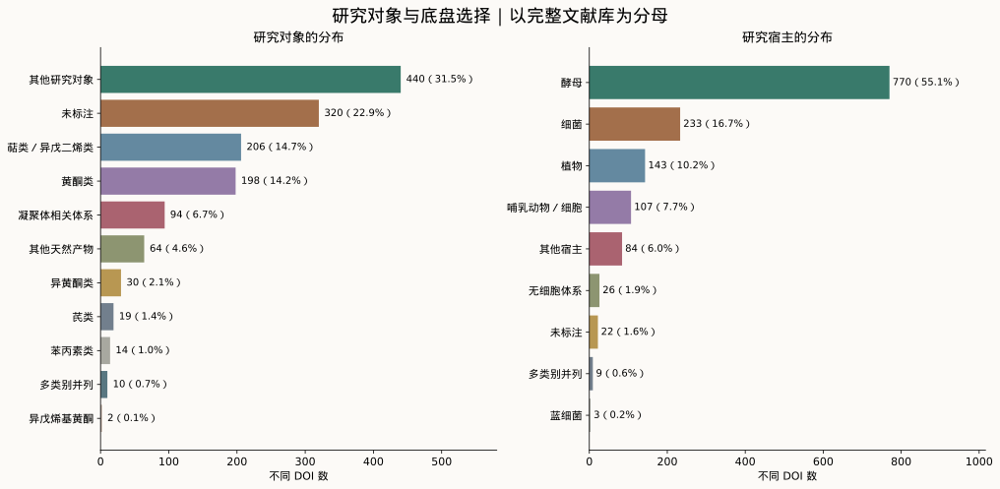
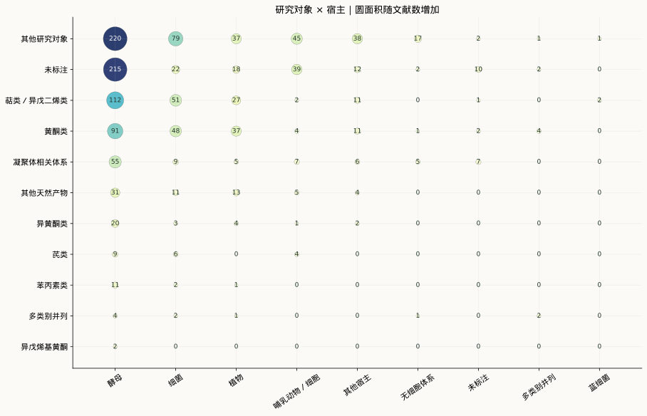
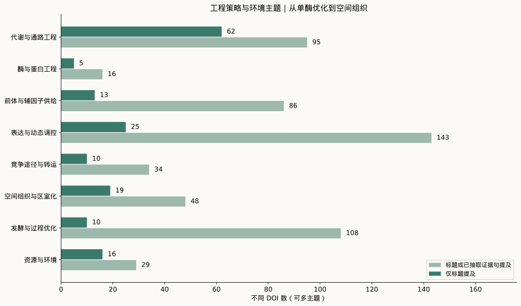
表达与动态调控涉及 143 篇，发酵与过程优化 108 篇，前体与辅因子供给 86 篇，空间组织与区室化 48 篇。我们的推断是：项目可以在已有表达和过程优化基础上，进一步检验酶与底物的空间组织是否改善多步反应；文献频数用于选择可借鉴的方法，不代表方法的成功率。
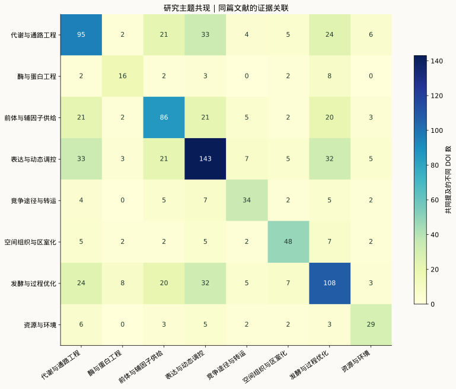
这张图帮助安排组合实验：空间组织需要同时考虑表达水平、前体／辅因子供给和培养条件。因此，相分离组应配有表达匹配的无相分离对照，避免将表达量变化误认为空间组织效果。
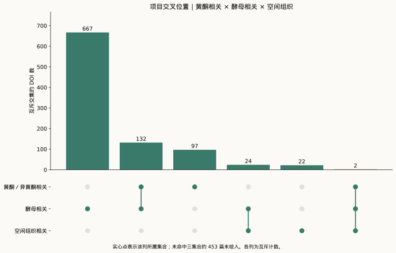
本库黄酮相关 231 篇、酵母相关 825 篇、空间组织相关 48 篇；三者交集为 2 篇：一篇是酵母过氧化物酶体合成二氢槲皮素的研究，一篇是酵母酶共定位综述。这个交叉位置支持一个明确的问题：能否将已有空间组织思路迁移到光甘草定的多酶反应？“空间组织”涵盖有膜区室与无膜凝聚体，两者不能等同。
该交集说明当前语料中的方法连接较窄，适合提出进一步验证的研究方向。它不等同于全球只有两篇相关研究，也不用于宣称项目已被证明有效或具有全球首创性。
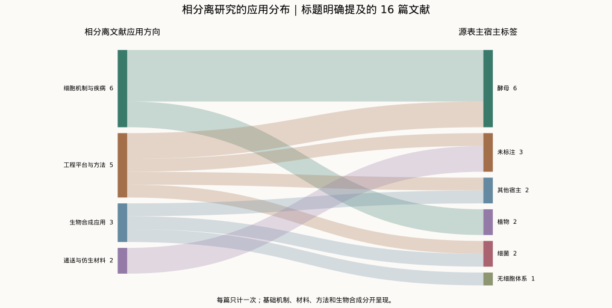
其中 3 篇归入生物合成应用，5 篇归入工程平台与方法，6 篇为细胞机制与疾病，2 篇为递送与仿生材料。这为项目提供不同层次的知识：形成和调控凝聚体的方法、酶招募机制，以及其他产物中的生产应用。
| 可迁移案例 | 文献结果 | 与项目的联系 | 文献 DOI |
|---|---|---|---|
| 无细胞甘氨酸合成 | 数据库记录：1 小时游离酶对照 3.4 mmol/L，凝聚体体系 5.0 mmol/L，约为对照的 1.47 倍。 | 提供同研究内的定量方法例证；该增益不能直接转移到酵母光甘草定。 | 10.1016/j.jcou.2025.103269 |
| 依克多因的凝聚体工程 | 数据库记录：工程菌在 5 L 反应器中 24 小时约 50 g/L；原研究结合祖先酶重建与空间组织。 | 说明凝聚体可进入生产体系研究；最终滴度不能全归因于相分离，也不与光甘草定直接排名。 | 10.1016/j.enzmictec.2026.110928 |
| 酵母过氧化物酶体合成二氢槲皮素 | 数据库记录：摇瓶从头合成滴度 120.3 ± 2.4 mg/L；属于有膜细胞器区室化。 | 比其他产物更接近黄酮与酵母组合，支持空间组织的迁移思路；不作为液液相分离的直接验证。 | 10.1186/s12934-025-02773-2 |
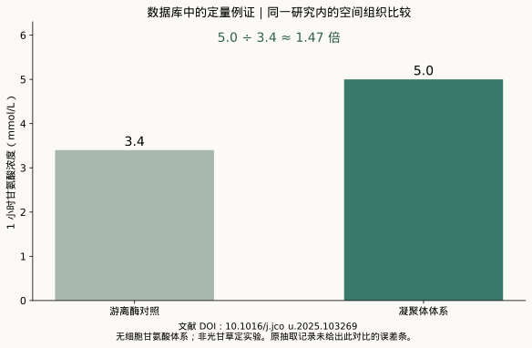
案例来源：甘氨酸研究、依克多因研究、二氢槲皮素研究。这是方法例示，不是全部研究的效果量综述。
既有光甘草定通路研究指出氧化成环步骤和中间体胞外分布值得关注。项目应检验生产是否受酶级联协调和局部反应环境限制，而不只追求更强表达。
本库提供酵母、黄酮通路、酶共定位、区室化和凝聚体工程的相邻证据。选择这条路线具有可解释的方法基础。
将空间组织方法放入光甘草定通路，检验产物形成、关键中间体分布和细胞负担是否一起改善。
在匹配表达与培养条件下，获得产物及中间体时间序列、空间组织证据和纯产物资源强度。这些结果才能评价路线是否有效。
上述结论中，“路线具有研究依据”是文献支持的判断，“相分离能提高本项目生产效率”仍是实验假设。必要性建立在具体生产问题及可检验的改进空间上，而非单凭论文数量少。
| 研究 | 条件 | 滴度（mg/L） |
|---|---|---|
| 张等，2026：生物合成网络 | 工程酿酒酵母，从葡萄糖从头合成，摇瓶 | 0.5 |
| 张等，2026：生物合成网络 | 工程酵母，前体补料后的多路径修饰模块 | 0.9 |
| 邓等，2026：模块组装 | 二倍体酿酒酵母，从葡萄糖从头合成 | 0.24 |
| 邓等，2026：模块组装 | 从葡萄糖从头合成，5 L 生物反应器验证 | 1.2 |
来源：光甘草定生物合成网络研究、酵母模块组装研究。两篇外部补充不计入 1,397 篇数据库统计；不同条件分列。
可以按宿主、工程主题或关键词筛选，直接查看对应 DOI。论文题名保留原文，便于检索。
| 文献原题与 DOI | 宿主／对象 | 主题 |
|---|
暂按非喷雾、留敷型面部护肤原料评价。ADMET-AI 作为主要计算框架，理由是本地五成员结果可复现、任务覆盖明确；其他平台用于补充终点和检查分歧。选择依据与结果是否有利无关。
保留 17 项任务：3 项主要危害、2 项配方性质和 12 项受体／细胞应答。口服吸收、血脑屏障和常规药代任务退出当前主要叙事；长期和全身效应仍需结合经皮暴露评估。参照组在比较结果前按用途、分子身份和公开安全资料确定，不因分数不利而更换。
| 参照成分 | 已有安全资料及适用边界 |
|---|---|
| α-熊果苷 | SCCS 支持面霜不超过 2%、身体乳不超过 0.5% 的指定用途；需控制氢醌痕量。 |
| 烟酰胺 | CIR 2005 支持所评估的化妆品用法；报告包含最高 5% 的人体刺激性试验。2% 和 5% 的色素研究提供用途参照，均不是通用安全上限。 |
| 抗坏血酸葡糖苷 | CIR 支持报告所述用法和浓度；非喷雾面颈产品报告用量最高 5%。该评估未覆盖以皮肤脱色为目的的使用。 |
| 曲酸 | SCCS 最终意见支持不超过 1% 的指定美白用途；EU 2024/996 限面部和手部产品。皮肤屏障受损或去角质场景需额外关注。 |
| β-熊果苷 | SCCS 支持面霜不超过 7% 的指定用途，并要求控制氢醌痕量；不能把 α/β 两者当作独立安全证据票数。 |
资料来源：熊果苷评估、烟酰胺评估、抗坏血酸葡糖苷评估、曲酸评估。这些浓度是特定资料的使用／评估条件，不是光甘草定的安全浓度，也不是中国市场的合规结论。
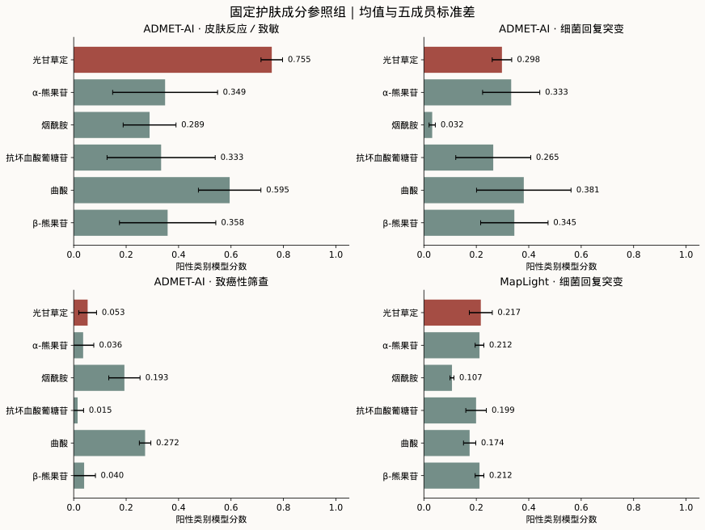
目前的实际结论：光甘草定的 ADMET-AI 致癌性分数为 0.053，低于部分参照；细菌回复突变分数为 0.298，处于参照范围内。但皮肤反应／致敏分数为 0.755，高于全部五种参照。结果支持确定后续验证重点，不能概括为“比常见护肤成分更安全”。
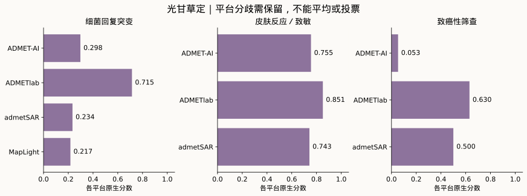
| 模型／工具 | 实际输出 | 如何解释 |
|---|---|---|
| Chemprop 原子解释 | 已解释细菌回复突变、皮肤反应和致癌性三项任务；六分子 × 三任务 × 五成员，共 90 项数值完整性检查。 | 显示原子特征对指定模型输出的相对贡献；不是另一份独立毒性证据，也不是因果致毒基团。 |
| MapLight（无图神经网络版本） | 光甘草定细菌回复突变分数 0.217，五成员标准差 0.044。使用分子指纹／描述符和 CatBoost。 | 补充另一种建模框架。图神经网络扩展尚未运行，不记作已完成。 |
| ADMETlab | 光甘草定皮肤致敏 0.851、细菌回复突变 0.715、眼刺激 0.983。 | 致突变判断与 ADMET-AI／MapLight 存在分歧；眼刺激应纳入验证。 |
| admetSAR | 光甘草定皮肤致敏 0.743、眼刺激 0.797、细菌回复突变 0.234；另有光毒、光致刺激和光过敏任务。 | 补充局部接触及光相关终点；三个光相关任务不能混为同一结论。 |
| ProTox | 致癌和致突变均报告非活性、类别置信度各 0.67；生态毒性报告活性、置信度 0.59。 | 置信度对应所报告类别，不能当作阳性概率；生态信号仍需暴露信息。 |
| VEGA、EPI Suite、ECOSAR | 提供降解、富集和水生毒性预测；多项存在适用域或结构范围限制。 | 用于设计排放控制与验证优先级，详见环境部分。 |
ADMET-AI 与 Chemprop 解释属于同一预测链，不能计作两个独立模型的一致证据。ADMETlab、admetSAR、ProTox、VEGA 和 EPA 工具在本次页面更新中使用已核实的既有导出结果。
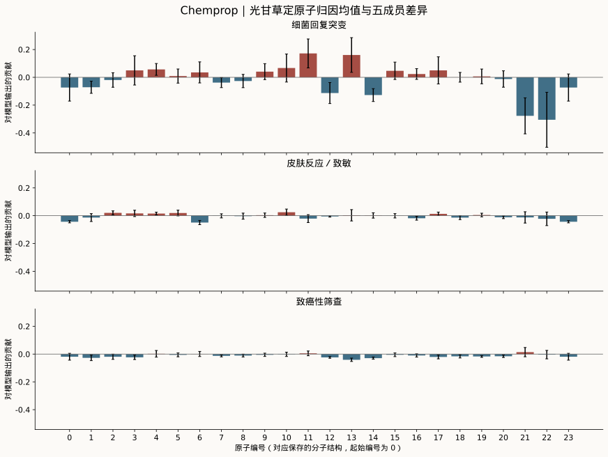
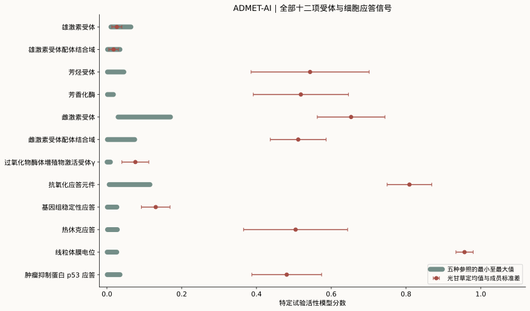
光甘草定在线粒体膜电位、抗氧化应答及多项受体任务上高于当前参照组。需要通过相关实验区分特定作用、细胞毒性和试验干扰；不能直接推出人体内分泌干扰或美白功效。
| 化合物 | 模型 | 任务 | 原生输出均值 | 五成员标准差 |
|---|---|---|---|---|
| 光甘草定 | ADMET-AI | 细菌回复突变 | 0.297781 | 0.037161 |
| 光甘草定 | ADMET-AI | 致癌性筛查 | 0.053176 | 0.033896 |
| 光甘草定 | ADMET-AI | 雄激素受体配体结合域 | 0.017916 | 0.012896 |
| 光甘草定 | ADMET-AI | 雄激素受体 | 0.026554 | 0.013488 |
| 光甘草定 | ADMET-AI | 芳烃受体 | 0.543452 | 0.157919 |
| 光甘草定 | ADMET-AI | 芳香化酶 | 0.518780 | 0.127265 |
| 光甘草定 | ADMET-AI | 雌激素受体配体结合域 | 0.511715 | 0.074660 |
| 光甘草定 | ADMET-AI | 雌激素受体 | 0.653144 | 0.090515 |
| 光甘草定 | ADMET-AI | 过氧化物酶体增殖物激活受体γ | 0.076024 | 0.036042 |
| 光甘草定 | ADMET-AI | 抗氧化应答元件 | 0.809183 | 0.059664 |
| 光甘草定 | ADMET-AI | 基因组稳定性应答 | 0.130559 | 0.038353 |
| 光甘草定 | ADMET-AI | 热休克应答 | 0.504733 | 0.139178 |
| 光甘草定 | ADMET-AI | 线粒体膜电位 | 0.956606 | 0.023107 |
| 光甘草定 | ADMET-AI | 肿瘤抑制蛋白 p53 应答 | 0.480942 | 0.093344 |
| 光甘草定 | ADMET-AI | 皮肤反应／致敏 | 0.755438 | 0.041053 |
| α-熊果苷 | ADMET-AI | 细菌回复突变 | 0.333004 | 0.109084 |
| α-熊果苷 | ADMET-AI | 致癌性筛查 | 0.035992 | 0.040635 |
| α-熊果苷 | ADMET-AI | 雄激素受体配体结合域 | 0.029232 | 0.013172 |
| α-熊果苷 | ADMET-AI | 雄激素受体 | 0.064122 | 0.013259 |
| α-熊果苷 | ADMET-AI | 芳烃受体 | 0.025500 | 0.013381 |
| α-熊果苷 | ADMET-AI | 芳香化酶 | 0.017293 | 0.009700 |
| α-熊果苷 | ADMET-AI | 雌激素受体配体结合域 | 0.074254 | 0.020060 |
| α-熊果苷 | ADMET-AI | 雌激素受体 | 0.169941 | 0.052241 |
| α-熊果苷 | ADMET-AI | 过氧化物酶体增殖物激活受体γ | 0.006250 | 0.002702 |
| α-熊果苷 | ADMET-AI | 抗氧化应答元件 | 0.078807 | 0.049967 |
| α-熊果苷 | ADMET-AI | 基因组稳定性应答 | 0.026587 | 0.017742 |
| α-熊果苷 | ADMET-AI | 热休克应答 | 0.008286 | 0.009210 |
| α-熊果苷 | ADMET-AI | 线粒体膜电位 | 0.025800 | 0.018040 |
| α-熊果苷 | ADMET-AI | 肿瘤抑制蛋白 p53 应答 | 0.033787 | 0.014867 |
| α-熊果苷 | ADMET-AI | 皮肤反应／致敏 | 0.348610 | 0.200110 |
| 烟酰胺 | ADMET-AI | 细菌回复突变 | 0.031763 | 0.011926 |
| 烟酰胺 | ADMET-AI | 致癌性筛查 | 0.193410 | 0.059641 |
| 烟酰胺 | ADMET-AI | 雄激素受体配体结合域 | 0.001735 | 0.000827 |
| 烟酰胺 | ADMET-AI | 雄激素受体 | 0.010776 | 0.000931 |
| 烟酰胺 | ADMET-AI | 芳烃受体 | 0.009338 | 0.008533 |
| 烟酰胺 | ADMET-AI | 芳香化酶 | 0.001500 | 0.000765 |
| 烟酰胺 | ADMET-AI | 雌激素受体配体结合域 | 0.001285 | 0.000486 |
| 烟酰胺 | ADMET-AI | 雌激素受体 | 0.029850 | 0.002622 |
| 烟酰胺 | ADMET-AI | 过氧化物酶体增殖物激活受体γ | 0.000442 | 0.000203 |
| 烟酰胺 | ADMET-AI | 抗氧化应答元件 | 0.006097 | 0.004239 |
| 烟酰胺 | ADMET-AI | 基因组稳定性应答 | 0.001135 | 0.000677 |
| 烟酰胺 | ADMET-AI | 热休克应答 | 0.002678 | 0.001429 |
| 烟酰胺 | ADMET-AI | 线粒体膜电位 | 0.000745 | 0.000496 |
| 烟酰胺 | ADMET-AI | 肿瘤抑制蛋白 p53 应答 | 0.000885 | 0.000432 |
| 烟酰胺 | ADMET-AI | 皮肤反应／致敏 | 0.289422 | 0.100810 |
| 抗坏血酸葡糖苷 | ADMET-AI | 细菌回复突变 | 0.264553 | 0.142966 |
| 抗坏血酸葡糖苷 | ADMET-AI | 致癌性筛查 | 0.014999 | 0.022719 |
| 抗坏血酸葡糖苷 | ADMET-AI | 雄激素受体配体结合域 | 0.034842 | 0.028183 |
| 抗坏血酸葡糖苷 | ADMET-AI | 雄激素受体 | 0.052219 | 0.014584 |
| 抗坏血酸葡糖苷 | ADMET-AI | 芳烃受体 | 0.001491 | 0.000962 |
| 抗坏血酸葡糖苷 | ADMET-AI | 芳香化酶 | 0.003211 | 0.002566 |
| 抗坏血酸葡糖苷 | ADMET-AI | 雌激素受体配体结合域 | 0.037404 | 0.019009 |
| 抗坏血酸葡糖苷 | ADMET-AI | 雌激素受体 | 0.125399 | 0.043280 |
| 抗坏血酸葡糖苷 | ADMET-AI | 过氧化物酶体增殖物激活受体γ | 0.002260 | 0.003351 |
| 抗坏血酸葡糖苷 | ADMET-AI | 抗氧化应答元件 | 0.045766 | 0.026722 |
| 抗坏血酸葡糖苷 | ADMET-AI | 基因组稳定性应答 | 0.009252 | 0.007340 |
| 抗坏血酸葡糖苷 | ADMET-AI | 热休克应答 | 0.001556 | 0.001177 |
| 抗坏血酸葡糖苷 | ADMET-AI | 线粒体膜电位 | 0.001827 | 0.000893 |
| 抗坏血酸葡糖苷 | ADMET-AI | 肿瘤抑制蛋白 p53 应答 | 0.023520 | 0.013752 |
| 抗坏血酸葡糖苷 | ADMET-AI | 皮肤反应／致敏 | 0.333438 | 0.206262 |
| 曲酸 | ADMET-AI | 细菌回复突变 | 0.381095 | 0.180216 |
| 曲酸 | ADMET-AI | 致癌性筛查 | 0.272310 | 0.021951 |
| 曲酸 | ADMET-AI | 雄激素受体配体结合域 | 0.011242 | 0.003566 |
| 曲酸 | ADMET-AI | 雄激素受体 | 0.013559 | 0.004458 |
| 曲酸 | ADMET-AI | 芳烃受体 | 0.045351 | 0.032778 |
| 曲酸 | ADMET-AI | 芳香化酶 | 0.003969 | 0.002045 |
| 曲酸 | ADMET-AI | 雌激素受体配体结合域 | 0.013992 | 0.003318 |
| 曲酸 | ADMET-AI | 雌激素受体 | 0.063489 | 0.015413 |
| 曲酸 | ADMET-AI | 过氧化物酶体增殖物激活受体γ | 0.009285 | 0.004046 |
| 曲酸 | ADMET-AI | 抗氧化应答元件 | 0.115063 | 0.043825 |
| 曲酸 | ADMET-AI | 基因组稳定性应答 | 0.013052 | 0.003139 |
| 曲酸 | ADMET-AI | 热休克应答 | 0.027805 | 0.013894 |
| 曲酸 | ADMET-AI | 线粒体膜电位 | 0.017307 | 0.012793 |
| 曲酸 | ADMET-AI | 肿瘤抑制蛋白 p53 应答 | 0.034999 | 0.012753 |
| 曲酸 | ADMET-AI | 皮肤反应／致敏 | 0.594838 | 0.119172 |
| β-熊果苷 | ADMET-AI | 细菌回复突变 | 0.345091 | 0.128556 |
| β-熊果苷 | ADMET-AI | 致癌性筛查 | 0.039781 | 0.043142 |
| β-熊果苷 | ADMET-AI | 雄激素受体配体结合域 | 0.025803 | 0.012106 |
| β-熊果苷 | ADMET-AI | 雄激素受体 | 0.060042 | 0.011636 |
| β-熊果苷 | ADMET-AI | 芳烃受体 | 0.029726 | 0.015029 |
| β-熊果苷 | ADMET-AI | 芳香化酶 | 0.016812 | 0.009677 |
| β-熊果苷 | ADMET-AI | 雌激素受体配体结合域 | 0.064672 | 0.015803 |
| β-熊果苷 | ADMET-AI | 雌激素受体 | 0.159016 | 0.049215 |
| β-熊果苷 | ADMET-AI | 过氧化物酶体增殖物激活受体γ | 0.005467 | 0.002403 |
| β-熊果苷 | ADMET-AI | 抗氧化应答元件 | 0.076607 | 0.047815 |
| β-熊果苷 | ADMET-AI | 基因组稳定性应答 | 0.025123 | 0.018072 |
| β-熊果苷 | ADMET-AI | 热休克应答 | 0.007552 | 0.008044 |
| β-熊果苷 | ADMET-AI | 线粒体膜电位 | 0.026267 | 0.020812 |
| β-熊果苷 | ADMET-AI | 肿瘤抑制蛋白 p53 应答 | 0.031722 | 0.016324 |
| β-熊果苷 | ADMET-AI | 皮肤反应／致敏 | 0.358229 | 0.183754 |
| 光甘草定 | ADMET-AI | 亲脂性数据集预测值 | 3.583479 | 0.285599 |
| 光甘草定 | ADMET-AI | 水溶解度（以 mol/L 为单位取对数） | -4.315408 | 0.322692 |
| α-熊果苷 | ADMET-AI | 亲脂性数据集预测值 | -0.161023 | 0.486479 |
| α-熊果苷 | ADMET-AI | 水溶解度（以 mol/L 为单位取对数） | -0.884434 | 0.242227 |
| 烟酰胺 | ADMET-AI | 亲脂性数据集预测值 | -0.434613 | 0.077651 |
| 烟酰胺 | ADMET-AI | 水溶解度（以 mol/L 为单位取对数） | -0.070720 | 0.195303 |
| 抗坏血酸葡糖苷 | ADMET-AI | 亲脂性数据集预测值 | -2.009693 | 0.935930 |
| 抗坏血酸葡糖苷 | ADMET-AI | 水溶解度（以 mol/L 为单位取对数） | -0.395088 | 0.536142 |
| 曲酸 | ADMET-AI | 亲脂性数据集预测值 | -0.431321 | 0.228934 |
| 曲酸 | ADMET-AI | 水溶解度（以 mol/L 为单位取对数） | -0.103989 | 0.303686 |
| β-熊果苷 | ADMET-AI | 亲脂性数据集预测值 | -0.129747 | 0.452888 |
| β-熊果苷 | ADMET-AI | 水溶解度（以 mol/L 为单位取对数） | -0.872052 | 0.232146 |
| 光甘草定 | MapLight | 细菌回复突变 | 0.217171 | 0.043759 |
| α-熊果苷 | MapLight | 细菌回复突变 | 0.212160 | 0.016549 |
| 烟酰胺 | MapLight | 细菌回复突变 | 0.107191 | 0.007490 |
| 抗坏血酸葡糖苷 | MapLight | 细菌回复突变 | 0.199097 | 0.039170 |
| 曲酸 | MapLight | 细菌回复突变 | 0.174482 | 0.023391 |
| β-熊果苷 | MapLight | 细菌回复突变 | 0.212160 | 0.016549 |
亲脂性和水溶解度为回归任务，不按 0–1 的阳性分数解释；水溶解度以 mol/L 为单位取对数。没有统一的低风险阈值，0.5 也不是护肤品安全线。
评价范围参考 化妆品原料安全评价指南 与 皮肤致敏整合评价方法。
护肤品使用后的污水路径，以及生产中的溶剂、残余产物和活菌处理，都需要纳入讨论。原料来自微生物，并不自动意味着更容易降解或更少环境负担。
| 问题 | 已有结果 | 结论边界 |
|---|---|---|
| 降解 | VEGA：不易快速生物降解，适用域为中等。 | 保留难降解关注；不能把模型类别换算成实际环境半衰期。 |
| 生物富集 | EPI Suite 生物富集因子约 1,542 L/kg 湿重；VEGA 多项富集结果适用域较低。 | 是筛查预测，不与不同方法的生物积累因子取平均。 |
| 水生毒性 | VEGA 预测藻类半数效应浓度 1.34 mg/L，水蚤 2.48 mg/L，鱼类半数致死浓度 2.54 mg/L。 | 藻类与鱼类结果适用域较低，水蚤为中等；不同物种和试验终点不能直接排名。 |
| 类别与范围警告 | ECOSAR 中性有机物类别鱼类 96 小时半数致死浓度约 0.268 mg/L，但超过该模型的亲脂性适用范围。 | 保留原始警告，不据此设排放限值；多类别输出不平均。 |
| 实际环境风险 | 尚无项目排放浓度、处理去除率及受纳水体暴露数据。 | 不能计算可靠风险商，也不能宣称实际水环境安全。 |
方法来源：美国环保署环境归趋筛查工具、美国环保署水生毒性模型。
统一功能单位为 1 g 经纯度校正的分离光甘草定。先匹配培养、分离纯化和废物处理边界；上游原料与设备制造尚未纳入，所以当前不是完整生命周期评价。
纯产物质量 = 分离样品质量 × 光甘草定质量分数。若已经使用分离后的质量，不再重复乘回收率。水、溶剂、总投入质量、电耗和成本分别计算，只有相同单位的数值才可相比。
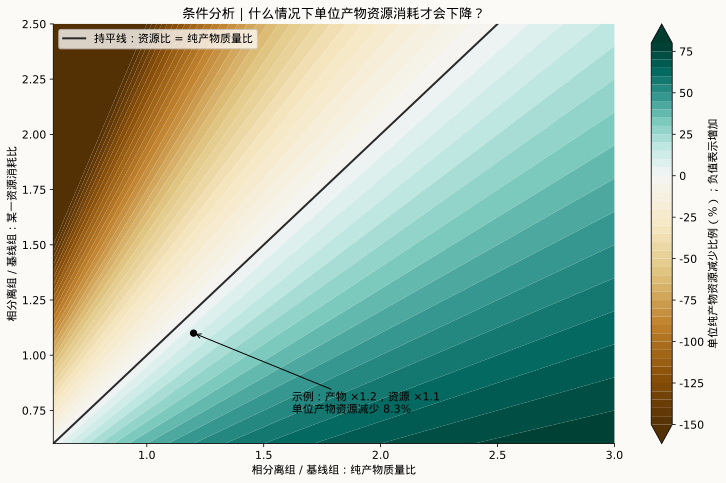
举例：如果纯产物质量提高 20%，某项批次资源只增加 10%，则该项单位产物资源减少 8.3%。如果产物提高 20%、资源增加 50%，强度反而提高 25%。这两者都是假设情景，不能写成实验节约量。
先取得可信的身份、定量、匹配组生产结果及纯化清单，再决定是否扩大验证。下表是下一阶段的工作清单，不是已完成的实验记录。
时间序列模板已补入化合物 13，避免只记录部分中间体而遗漏关键节点。正式采样时间和重复数应由先导数据、测定灵敏度与功效分析确定，不凭空生成拟合曲线或显著性。
当前收到的是讨论截图，尚未收到提到的三份访谈原文。截图提出的“一致护肤成分参照”和“补充环境视角”已进入本轮设计。展示重点依据用途和证据质量确定；不利指标及模型分歧保留。
待取得原文后，逐条登记受访者角色、匿名标识、时间、问题、原文定位、引用许可、主题代码、建议的设计修改和验证方式。区分受访者原话与团队解释，通过复核和回访检查修改是否回应了原始关切。
技术可行性：已有外部文献支持酵母合成光甘草定，本项目可以据此建立分析与生产比较；相分离带来的改进仍待匹配实验验证。
护肤用途：已完成多模型筛查和固定参照比较。部分分数相对较低，但致敏、眼刺激及机理信号提示后续重点；目前不足以证明光甘草定比参照更安全或确定安全添加浓度。
可持续性：已明确单位纯产物的资源比较方法和收支平衡条件。只有实际生产增益超过对应资源增量，且排放得到验证，才能支持具体的效率或环境改善结论。
下一次更新：优先接入身份确认、匹配组生产重复和纯化／资源记录；有了这些数据，才能将条件图替换为带不确定性的实测比较图。
图表中的模型名称、化合物编号和计量单位保留标准写法。下载的原始模型字段保留平台标识，中文解释见本页及说明文件。原始文献数据库保留校验值，审计结果另存，未覆盖源文件。
复现入口：以下命令读取已保存预测、重算派生表格及中文图表，并检查页面链接。完整文献审计可通过独立脚本及原始文件复算，页面默认重建不要求下载 154 MB 的源数据库。
python analysis/run_all.py